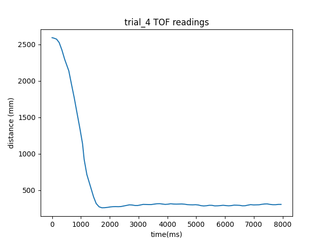

Lab 6
In this lab, PID control was implemented on the artemis in order to simulate the simplest control using one of the sensors on the robot.
Prelab
Clearly describe how you handle sending and receiving data over Bluetooth
To send and receive data, I simply used the GET_AGMT_5s command from the last labs which would send IMU and TOF sensor data over bluetooth. I used 7 arrays
int timeBuff[BUF_SIZE];
float yawBuff[BUF_SIZE];
float rollBuff[BUF_SIZE];
float pitchBuff[BUF_SIZE];
int16_t motorBuff[BUF_SIZE];
int16_t dist1Buff[BUF_SIZE];
int16_t dist2Buff[BUF_SIZE];
When the sensors have data ready the data is stored like this
timeBuff[cnt] = (int)millis();
yawBuff[cnt] = yaw_g;
rollBuff[cnt] = roll_c;
pitchBuff[cnt] = pitch_c;
#if TOF1 == 1
getDistance(&vl53_1, &(dist1Buff[cnt]));
#endif
// new measurement for the taking!
#if TOF2 == 1
getDistance(&vl53_2, &(dist2Buff[cnt]));
#endif
doPID(dist1Buff[cnt], (int16_t)fun_arg, motorBuff, cnt);
cnt++;
This occurs in a time loop, so every time data is ready, sensor data is stored in an array and time stamped. This also shows that the PID loop occurs every time sensor data is ready since in between data collections, doPID isn’t helpful.
At the end of the timed loop, the arrays are sent in the same manner as previous labs to the host computer. In python, as explained in Lab 4, this data is read into a dictionary of arrays. The only change was the addition of
appendVal(data["motor"],arr,'M',0)
This allowed pwm values to be received. These motor values are assigned in the ‘doPID’ function explained later.
Lab Tasks
Range/Speed/Sampling time
For consistency with future labs, I collected all sensor data at once. By measuring the time between measurements, I got an average sampling period of about 95ms. This is a sampling frequency of around 10Hz, so the loop can only execute as quickly as 10Hz. In the future, I may split these measurements up to increase the sampling rate of the IMU measurements. From Lab 3, the range of the TOF sensor is about 4m, so the error from the TOF sensor can be at most 4000mm. I also had to find the maximum speed of the robot. To find this, I looked at one of the trials and took the slope of these two points.
resulting in a calculated speed of 2.317m/s. This is very much on the high end as trials starting closer to the wall were well under 1m/s. The deadband was also found from last lab to be a pwm value of 24, so that had to be taken into account.
Coefficient choice
The first coefficient to workout was Kp. Since proportional control is simply multiplying by the error to approximate a pwm value, then \(\text{maximum pwm value} = (\text{maximum error}) * K_P\) so, \(K_P \approx \frac{\text{maximum pwm value}}{\text{maximum error}} = \frac{4000mm}{255} \approx .06\) so Kp should be of that magnitude. At the end of adjusting values, Kp was settled at 0.08 which was around what was expected. For Ki, this value would be multiplied by the integrated value which would increase every sampling period which is later discussed as around 100ms, so if Ki is to have the same values of Kp, then \(K_I = \frac{K_P}{10Hz} = 0.006\) After testing though, Ki became much higher at 0.15. To keep the integral from getting too large, I had to clamp the error accumulator. Since the robot starts so far from the equilibrium point, I didn’t want error to accumulate too much, so I clamped the error accumulator at about 300mm to be easy to turn over near equilibrium.
To find Kd, Kd would be the change in error and thus the derivative of position, so since the speed of the robot is at maximum, 2.317m/s, then \(K_D \approx \frac{\text{maximum pwm}}{\text{maximum change in error}} = \frac{\text{maximum pwm}}{\frac{\text{maximum speed}}{\text{sampling time}}} = \frac{(255)(.1s)}{2.317m/s} \approx 11\) This number is gigantic, but Kd should have a much smaller effect than Kp, so Kd was estimated to be around 100th of the size at around .2
Creating system
To create the PID controller, the doPID method shown earlier simply adjusts the pwm value of the motors according to the TOF data using the methods from lab 5. Here is the code for the controller,
if (current_pos == -1)
current_pos = 0;
int16_t error = current_pos - desired_pos;
error_accumulation += error;
if (error_accumulation > Imax)
error_accumulation = Imax;
if (error_accumulation < (-Imax))
error_accumulation = -Imax;
int16_t error_deriv = error - prev_error;
int16_t duty1 = Kp * error;
int16_t duty2 = Ki * error_accumulation;
int16_t duty3 = Kd * error_deriv;
int16_t duty_cycle = duty1 + duty2 + duty3;
prev_error = error;
if (duty_cycle < -1)
duty_cycle -= min_threshold;
else if (duty_cycle > 1)
duty_cycle += min_threshold;
if (duty_cycle > 255)
duty_cycle = 255;
if (duty_cycle < -255)
duty_cycle = -255;
change_speed((int)duty_cycle, (int)duty_cycle);
motorBuff[cnt] = duty_cycle;
Here, I use the deadband value, ‘min_threshold’, to make sure the pwm values can move the robot at minimum. I also clamp the accumulator value in order to make sure the error can change sign easily.
I had to figure out if I needed to take care of integral windup, the integral accumulator takes care of any windup. I also had to take care of derivative kick, but since my error derivative was continuous due to a constant setpoint, this was not needed. My error also changed very slowly, so a low pass filter was not needed either as all data frequencies were low from the TOF sensor.
I created a useful command, “CHANGE_PID” to change my pid values as well as integrator clamp and deadband over bluetooth like this
success = robot_cmd.get_next_value(P);
if (!success)
return;
success = robot_cmd.get_next_value(I);
if (!success)
return;
success = robot_cmd.get_next_value(D);
if (!success)
return;
success = robot_cmd.get_next_value(min);
if (!success)
return;
success = robot_cmd.get_next_value(max);
if (!success)
return;
Kp = P;
Ki = I;
Kd = D;
min_threshold = (int16_t)min;
Imax = (int16_t)max;
and called like this
ble.send_command(CMD.CHANGE_PID,"|.08|.02|.35|35|200")
This function testing PID values very easy.
To find all values, I used the 2nd heuristic approach discussed in lecture. First I increased Kp from about 0.001 until the car overshot the 300mm mark. I settled on about 0.008, but I changed this later opting for a much larger 0.08 based on my calculations shown by this video.
I then decreased Kp to 0.004 (before my change) and increased Ki until it lost stability shown here at about 0.03
Finally, I decreased Ki to about 0.2 and increased Kd until the system had steady control to a value of 0.2 resulting in these videos
trial 1
trial 2
trial 3
Here is the data for trial 3

 There’s one flaw in all of these trials, equilibrium is not fully reached. I realized in my code that I needed to change my
deadband calculation to
There’s one flaw in all of these trials, equilibrium is not fully reached. I realized in my code that I needed to change my
deadband calculation to
if (duty_cycle <= -1)
duty_cycle -= min_threshold;
else if (duty_cycle => 1)
duty_cycle += min_threshold;
As small PID calculations of 1 and -1 wouldn’t move the robot. I increased Ki and Kd significantly as Ki got the robot to move towards the wall much faster and Kd was able to prevent large overshoot thus resulting in the optimal system shown in an extra trial
trial 4

As can be seen, the system is quickly able to reach equilibrium without overshoot very much.
One problem seen in the video is that the car turns when it stops. This is due to the unequal powers of each motor, so when the motors start to slow down, they slow down at a different rate thus causing the car to turn. I may have to find a different way to make sure the motors move at the same speed instead of using a constant multiplier.